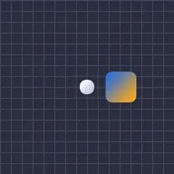

Ebeveyn yardımcısı

Alt katmanın ebeveynini nasıl izlediğini değiştirir: ölçek ve döndürme tamamen izleyebilir, kilitli kalabilir ya da belirli bir oranda izleyebilir. Otomatik döndürme, katmanı hareket ettikçe yuvarlanan bir tekerlek gibi döndürür.
Ebeveyn yardımcısı, bir alt katmana, yani bir ebeveyni takip eden bir katmana (düzenleyicinin üst çubuğundaki ebeveyn düğmesi) uygulanır ve onun nasıl takip edeceğini değiştirir.
- Ölçek ve Döndürme: Normal ebeveyni tamamen izler, Kilitli ebeveyn ne yaparsa yapsın alt katmanın kendi boyutunu veya açısını korur ve Ağırlıklı belirlediğiniz Ölçek ağırlığı veya Döndürme ağırlığı kadar izler (%100 tamamen, %50 yarım, negatif bir değer ters yönde).
- Otomatik döndürme, katmanı X ekseni veya Y ekseni boyunca hareket ederken, yerde yuvarlanan bir tekerlek gibi döndürür. Yarıçap ayarı tekerleği büyütür veya küçültür, böylece daha yavaş veya daha hızlı döner.
Ayarlar
| Ayar | Tür | Aralık | Varsayılan |
|---|---|---|---|
| Ölçek | Seçim | Normal, Kilitli, Ağırlıklı | Normal |
| Döndürme | Seçim | Normal, Kilitli, Ağırlıklı | Normal |
| Ölçek ağırlığı | Sayı | -1000% – 1000% | 100% |
| Döndürme ağırlığı | Sayı | -1000% – 1000% | 100% |
| Otomatik döndürme | Seçim | Kapalı, X ekseni, Y ekseni | Kapalı |
| Yarıçap ayarı | Sayı | -1000 px – 1000 px | 0 px |